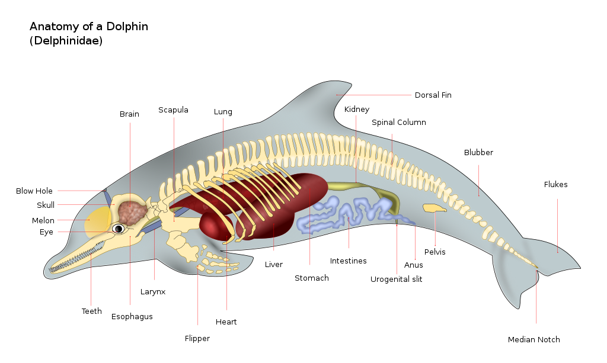
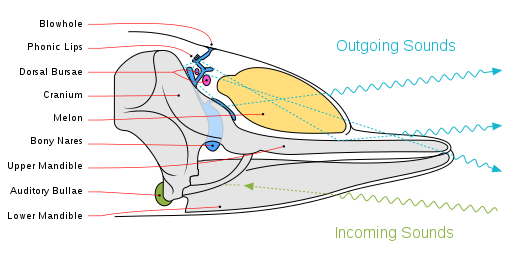

Dolphin
A dolphin is an aquatic mammal within the infraorder Cetacea. Dolphin species belong to the families Delphinidae (the oceanic dolphins), Platanistidae (the Indian river dolphins), Iniidae (the New World river dolphins), Pontoporiidae (the brackish dolphins), and the extinct Lipotidae (baiji or Chinese river dolphin). There are 40 extant species named as dolphins.
Dolphins range in size from the 1.7-metre-long (5 ft 7 in) and 50-kilogram (110-pound) Maui's dolphin to the 9.5 m (31 ft 2 in) and 10-tonne (11-short-ton) orca. Various species of dolphins exhibit sexual dimorphism where the males are larger than females. They have streamlined bodies and two limbs that are modified into flippers. Though not quite as flexible as seals, some dolphins can briefly travel at speeds of 29 kilometres (18 mi) per hour or leap about 30 feet (9.1 m). Dolphins use their conical teeth to capture fast-moving prey. They have well-developed hearing which is adapted for both air and water. It is so well developed that some can survive even if they are blind. Some species are well adapted for diving to great depths. They have a layer of fat, or blubber, under the skin to keep warm in the cold water.
Dolphins are widespread. Most species prefer the warm waters of the tropic zones, but some, such as the right whale dolphin, prefer colder climates. Dolphins feed largely on fish and squid, but a few, such as the orca, feed on large mammals such as seals. Male dolphins typically mate with multiple females every year, but females only mate every two to three years. Calves are typically born in the spring and summer months and females bear all the responsibility for raising them. Mothers of some species fast and nurse their young for a relatively long period of time. Dolphins produce a variety of vocalizations, usually in the form of clicks and whistles.
Dolphins are sometimes hunted in places such as Japan, in an activity known as dolphin drive hunting. Besides drive hunting, they also face threats from bycatch, habitat loss, and marine pollution. Dolphins have been depicted in various cultures worldwide. Dolphins are sometimes kept in captivity and trained to perform tricks. The most common dolphin species in captivity is the bottlenose dolphin, while there are around 60 orcas in captivity.

Etymology
The name is originally from Greek δελφίς (delphís), "dolphin", which was related to the Greek δελφύς (delphus), "womb". The animal's name can therefore be interpreted as meaning "a 'fish' with a womb". The name was transmitted via the Latin delphinus (the romanization of the later Greek δελφῖνος – delphinos[2]), which in Medieval Latin became dolfinus and in Old French daulphin, which reintroduced the ph into the word "Dolphin". The term mereswine (that is, "sea pig") has also historically been used.
The term 'dolphin' can be used to refer to most species in the family Delphinidae (oceanic dolphins) and the river dolphin families Iniidae (South American river dolphins), Pontoporiidae (La Plata dolphin), Lipotidae (Yangtze river dolphin) and Platanistidae (Ganges river dolphin and Indus river dolphin). This term has often been applied in the US, mainly in the fishing industry, to all small cetaceans (dolphins and porpoises) are considered to be porpoises, while the fish dorado is called dolphin fish. In common usage the term 'whale' is used only for the larger cetacean species, while the smaller ones with a beaked or longer nose are considered 'dolphins'. The name 'dolphin' is used casually as a synonym for bottlenose dolphin, the most common and familiar species of dolphin. There are six species of dolphins commonly thought of as whales, collectively known as blackfish: the orca, the melon-headed whale, the pygmy killer whale, the false killer whale, and the two species of pilot whales, all of which are classified under the family Delphinidae and qualify as dolphins. Although the terms 'dolphin' and 'porpoise' are sometimes used interchangeably, 'porpoise' usually refers to the Phocoenidae family, which have a shorter beak and spade-shaped teeth and differ in their behavior.
Hybridization
In 1933, three hybrid dolphins beached off the Irish coast; they were hybrids between Risso's and bottlenose dolphins. This mating was later repeated in captivity, producing a hybrid calf. In captivity, a bottlenose and a rough-toothed dolphin produced hybrid offspring. A common-bottlenose hybrid lives at SeaWorld California. Other dolphin hybrids live in captivity around the world or have been reported in the wild, such as a bottlenose-Atlantic spotted hybrid. The best known hybrid is the wholphin, a false killer whale-bottlenose dolphin hybrid. The wolphin is a fertile hybrid. Two wolphins currently live at the Sea Life Park in Hawaii; the first was born in 1985 from a male false killer whale and a female bottlenose. Wolphins have also been observed in the wild.
Evolution
Dolphins are descendants of land-dwelling mammals of the artiodactyl order (even-toed ungulates). They are related to the Indohyus, an extinct chevrotain-like ungulate, from which they split approximately 48 million years ago.
The primitive cetaceans, or archaeocetes, first took to the sea approximately 49 million years ago and became fully aquatic by 5–10 million years later.
Archaeoceti is a parvorder comprising ancient whales. These ancient whales are the predecessors of modern whales, stretching back to their first ancestor that spent their lives near (rarely in) the water. Likewise, the archaeocetes can be anywhere from near fully terrestrial, to semi-aquatic to fully aquatic, but what defines an archaeocete is the presence of visible legs or asymmetrical teeth. Their features became adapted for living in the marine environment. Major anatomical changes include the hearing set-up that channeled vibrations from the jaw to the earbone which occurred with Ambulocetus 49 million years ago, a streamlining of the body and the growth of flukes on the tail which occurred around 43 million years ago with Protocetus, the migration of the nasal openings toward the top of the cranium and the modification of the forelimbs into flippers which occurred with Basilosaurus 35 million years ago, and the shrinking and eventual disappearance of the hind limbs which took place with the first odontocetes and mysticetes 34 million years ago. The modern dolphin skeleton has two small, rod-shaped pelvic bones thought to be vestigial hind limbs. In October 2006, an unusual bottlenose dolphin was captured in Japan; it had small fins on each side of its genital slit, which scientists believe to be an unusually pronounced development of these vestigial hind limbs.
Anatomy
Dolphins have torpedo-shaped bodies with generally non-flexible necks, limbs modified into flippers, a tail fin, and bulbous heads. Dolphin skulls have small eye orbits, long snouts, and eyes placed on the sides of its head; they lack external ear flaps. Dolphins range in size from the 1.7 m (5 ft 7 in) long and 50 kg (110 lb) Maui's dolphin to the 9.5 m (31 ft 2 in) and 10 t (11 short tons) orca. Overall, they tend to be dwarfed by other Cetartiodactyls. Several species have female-biased sexual dimorphism, with the females being larger than the males.
Dolphins have conical teeth, as opposed to porpoises' spade-shaped teeth. These conical teeth are used to catch swift prey such as fish, squid or large mammals, such as seal
Breathing involves expelling stale air from their blowhole, in an upward blast, which may be visible in cold air, followed by inhaling fresh air into the lungs. Dolphins have rather small, unidentifiable spouts.
All dolphins have a thick layer of blubber, thickness varying on climate. This blubber can help with buoyancy, protection to some extent as predators would have a hard time getting through a thick layer of fat, and energy for leaner times; the primary usage for blubber is insulation from the harsh climate. Calves, generally, are born with a thin layer of blubber, which develops at different paces depending on the habitat.
Dolphins have a two-chambered stomach that is similar in structure to terrestrial carnivores. They have fundic and pyloric chambers.
Dolphins' reproductive organs are located inside the body, with genital slits on the ventral (belly) side. Males have two slits, one concealing the penis and one further behind for the anus.[39] Females have one genital slit, housing the vagina and the anus, with a mammary slit on either side.
Integumentary system
The integumentary system is an organ system mostly consisted of skin, hair, nails and endocrine glands. The skin of dolphins is very important as it is specialized to satisfy specific requirements. Some of these requirements include protection, fat storage, heat regulation, and sensory perception. The skin of a dolphin is made up of two parts: the epidermis and the blubber, which consists of two layers including the dermis and subcutis. The dolphin's skin is known to have a smooth rubber texture and is without hair and glands, except mammary glands. At birth, a newborn dolphin has hairs lined up in a single band on both sides of the rostrum, which is their jaw, and usually has a total length of 16–17 cm . Dolphins are a part of the species Cetacea. The epidermis of this species is characterized by the lack of keratin and by a prominent intertwine of epidermal rete pegs and long dermal papillae. The epidermal rete pegs are the epithelial extensions that project into the underlying connective tissue in both skin and mucous membranes. The dermal papillae are finger-like projections that help adhesion between the epidermal and dermal layers, as well as providing a larger surface area to nourish the epidermal layer. The thickness of a dolphin's epidermis varies, depending on species and age.
Blubber
Blubber is found within the dermis and subcutis layer. The dermis blends gradually with the adipose layer, which is known as fat, because the fat may extend up to the epidermis border and collagen fiber bundles extend throughout the whole subcutaneous blubber which is fat found under the skin. The thickness of the subcutaneous blubber or fat depends on the dolphin's health, development, location, reproductive state, and how well it feeds. This fat is thickest on the dolphin's back and belly. Most of the dolphin's body fat is accumulated in a thick layer of blubber. Blubber differs from fat in that, in addition to fat cells, it contains a fibrous network of connective tissue.
The blubber functions to streamline the body and to form specialized locomotor structures such as the dorsal fin, propulsive fluke blades and caudal keels. There are many nerve endings that resemble small, onion-like configurations that are present in the superficial portion of the dermis. Mechanoreceptors are found within the interlocks of the epidermis with dermal ridges. There are nerve fibers in the dermis that extend to the epidermis. These nerve endings are known to be highly proprioceptive, which explains sensory perception. Proprioception, which is also known as kinesthesia, is the body's ability to sense its location, movements and actions. Dolphins are sensitive to vibrations and small pressure changes.
Blood vessels and nerve endings can be found within the dermis. There is a plexus of parallel running arteries and veins in the dorsal fin, fluke, and flippers. The blubber manipulates the blood vessels to help the dolphin stay warm. When the temperature drops, the blubber constricts the blood vessels to reduce blood flow in the dolphin. This allows the dolphin to spend less energy heating its own body, ultimately keeping the animal warmer without burning energy as quick. In order to release heat, the heat must pass the blubber layer. There are thermal windows that lack blubber, are not fully insulated and are somewhat thin and highly vascularized, including the dorsal fin, flukes, and flippers. These thermal windows are a good way for dolphins to get rid of excess heat if overheating. Additionally in order to conserve heat, dolphins use countercurrent heat exchange. Blood flows in different directions in order for heat to transfer across membranes. Heat from warm blood leaving the heart will heat up the cold blood that is headed back to the heart from the extremities, meaning that the heart always has warm blood and it decreases the heat lost to the water in those thermal windows.
Locomotion
Dolphins have two pectoral flippers, containing four digits, a boneless dorsal fin for stability, and a tail fin for propulsion. Although dolphins do not possess external hind limbs, some possess discrete rudimentary appendages, which may contain feet and digits. Dolphins are fast swimmers in comparison to seals which typically cruise at 9–28 km/h (5.6–17.4 mph); the orca, in comparison, can travel at speeds up to 55.5 km/h (34.5 mph). The fusing of the neck vertebrae, while increasing stability when swimming at high speeds, decreases flexibility, which means they are unable to turn their heads. River dolphins have non-fused neck vertebrae and can turn their heads up to 90°. Dolphins swim by moving their tail fin and rear body vertically, while their flippers are mainly used for steering. Some species log out of the water, which may allow them to travel faster. Their skeletal anatomy allows them to be fast swimmers. All species have a dorsal fin to prevent themselves from involuntarily spinning in the water.
Senses
The dolphin ear has specific adaptations to the marine environment. In humans, the middle ear works as an impedance equalizer between the outside air's low impedance and the cochlear fluid's high impedance. In dolphins, and other marine mammals, there is no great difference between the outer and inner environments. Instead of sound passing through the outer ear to the middle ear, dolphins receive sound through the throat, from which it passes through a low-impedance fat-filled cavity to the inner ear. The dolphin ear is acoustically isolated from the skull by air-filled sinus pockets, which allow for greater directional hearing underwater. Dolphins send out high frequency clicks from an organ known as a melon. This melon consists of fat, and the skull of any such creature containing a melon will have a large depression. This allows dolphins to use echolocation for orientation. Though most dolphins do not have hair, they do have hair follicles that may perform some sensory function. Beyond locating an object, echolocation also provides the animal with an idea on an object's shape and size, though how exactly this works is not yet understood. The small hairs on the rostrum of the boto (river dolphins of South America) are believed to function as a tactile sense, possibly to compensate for the boto's poor eyesight.
The dolphin eye is relatively small for its size, yet they do retain a good degree of eyesight. As well as this, the eyes of a dolphin are placed on the sides of its head, so their vision consists of two fields, rather than a binocular view like humans have. When dolphins surface, their lens and cornea correct the nearsightedness that results from the water's refraction of light. Their eyes contain both rod and cone cells, meaning they can see in both dim and bright light, but they have far more rod cells than they do cone cells. They lack short wavelength sensitive visual pigments in their cone cells, indicating a more limited capacity for color vision than most mammals. Most dolphins have slightly flattened eyeballs, enlarged pupils (which shrink as they surface to prevent damage), slightly flattened corneas and a tapetum lucidum (eye tissue behind the retina); these adaptations allow for large amounts of light to pass through the eye and, therefore, a very clear image of the surrounding area. They also have glands on the eyelids and outer corneal layer that act as protection for the cornea